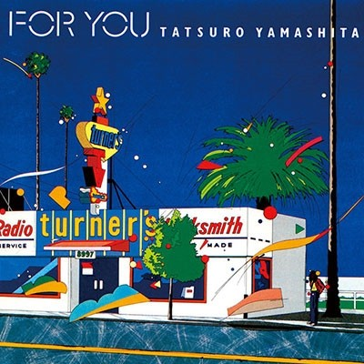
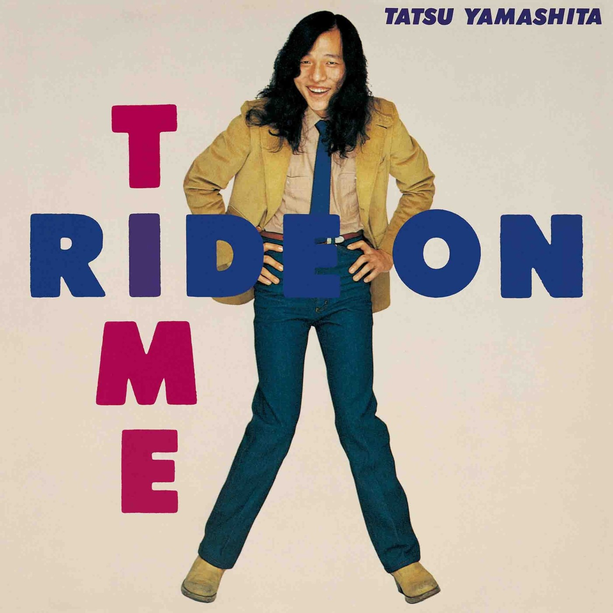
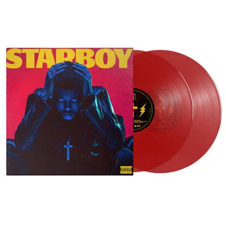
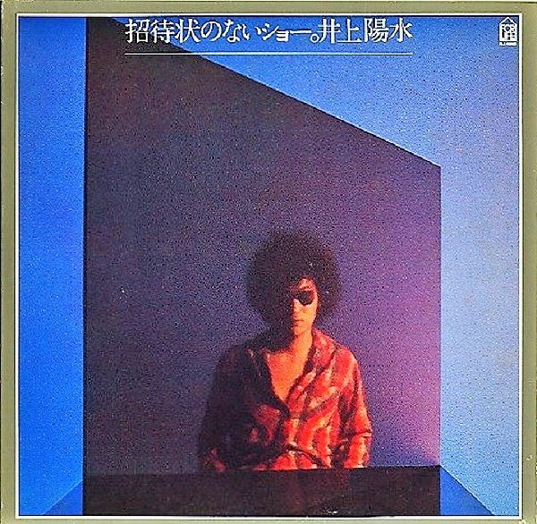
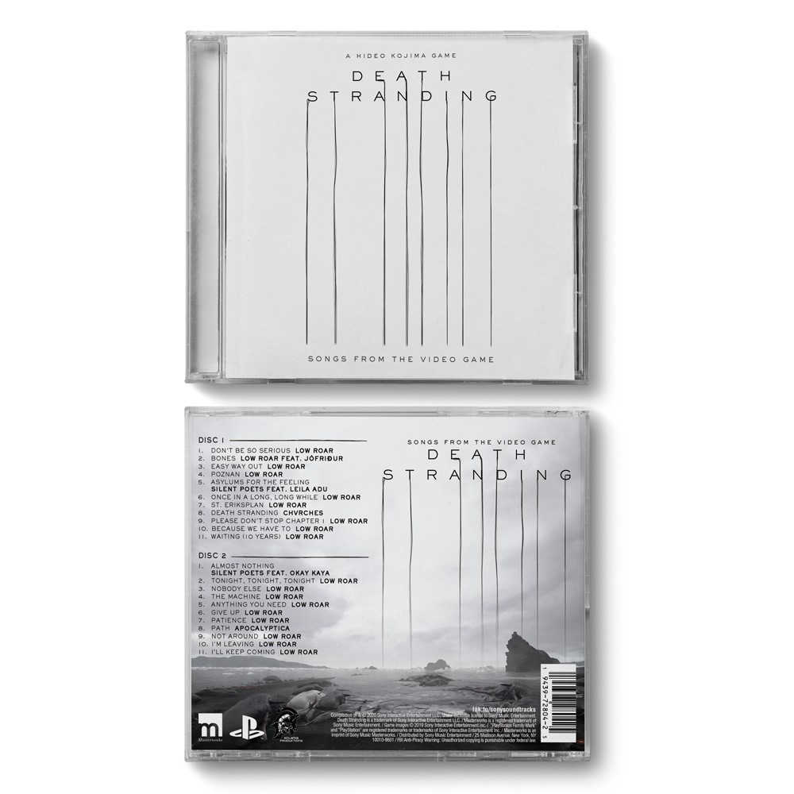
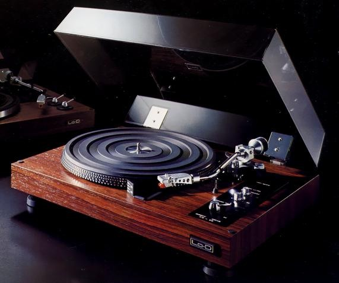

Блог
Заметки о покупках, прослушиваниях и пополнении музыкального архива.

Коллекция · Винил
В коллекции — For You
Пополнение японской полки: альбом Tatsuro Yamashita в виниловом формате.

Покупка · Винил
Ride on Time на пластинке
Ещё одно издание Tatsuro Yamashita добавлено в каталог коллекции.

Покупка · Цветной винил
Красное издание Starboy
Виниловый релиз The Weeknd с красными пластинками теперь находится в коллекции.

Коллекция · Японский винил
招待状のないショー
Японская пластинка Yosui Inoue пополнила раздел виниловых изданий.

Коллекция · CD
Музыка Death Stranding на CD
Двухдисковое издание Songs from the Video Game добавлено в музыкальный архив.

Аппаратура · Проигрыватель
Lo-D PS-38 — деревянное исполнение
Карточка проигрывателя дополнена реальной фотографией и готова к дальнейшему описанию.